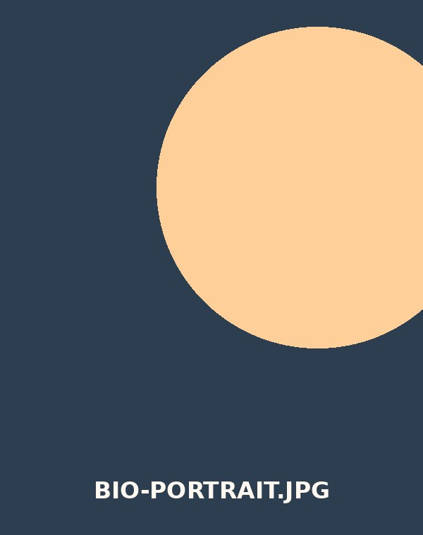

Erosioni

La mia passione per la filosofia e la politica nasce durante l'adolescenza. Questa passione si è poi trasformata in un percorso di studi completo: laurea triennale e magistrale in Scienze Filosofiche, entrambe conseguite al massimo dei voti. Storia, politica ed economia restano i temi che continuano a guidare le mie riflessioni e la mia scrittura.
Parallelamente, la fotografia è entrata nella mia vita a 16 anni, prima come passione saltuaria, poi — dai 24 anni — come professione vera e propria. Con la mia Sony a7IV ho affinato in poco tempo anche la realizzazione video, lavorando come fotografo e videomaker per clienti di ambiti diversi.
Oggi porto avanti entrambi i percorsi: da un lato la ricerca filosofica e l'analisi politica, dall'altro un lavoro visivo fatto di immagini e racconti per immagini.
2026
Università di Catania — 110 e lode.
2025
Formalizzazione dell'attività professionale avviata nel 2023.
2023
Affinamento della realizzazione video con la Sony a7IV, per clienti di ambiti diversi.
2022
Università di Catania — 110 e lode.
2019
Agrigento.